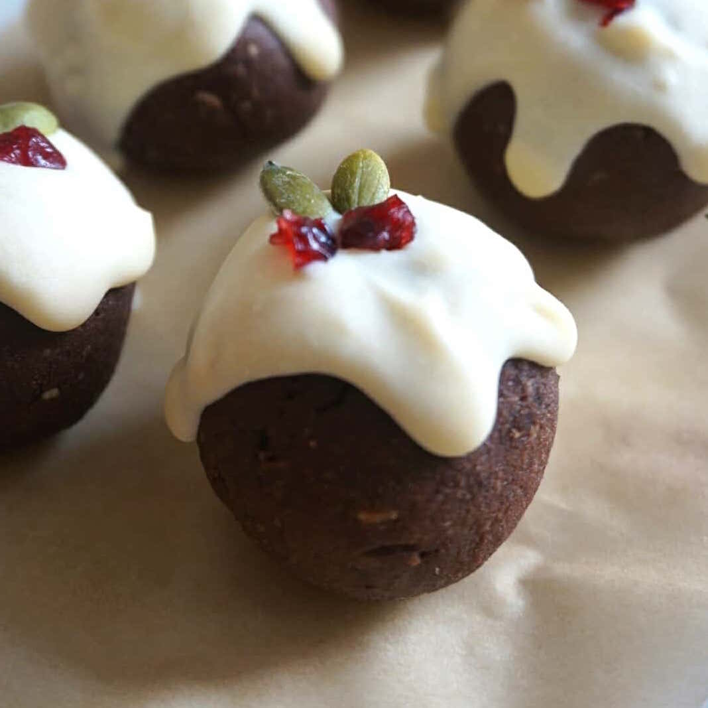
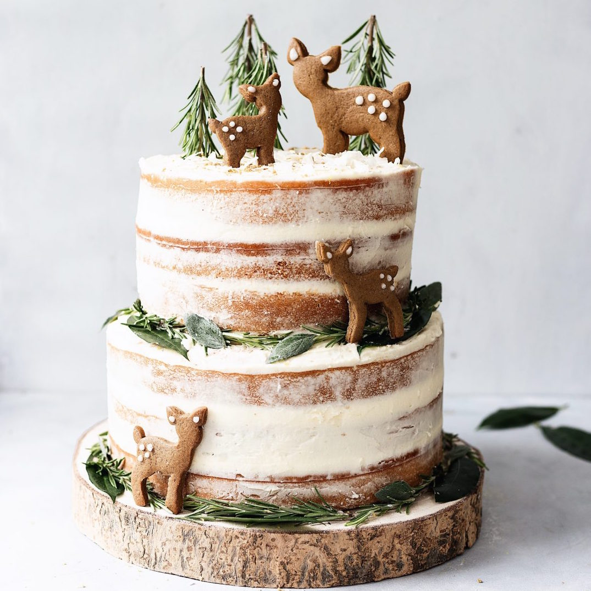
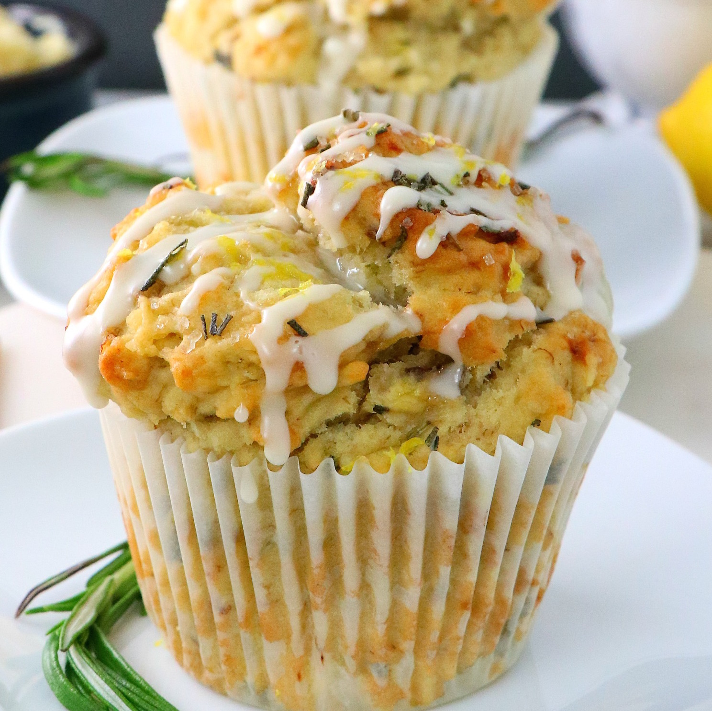
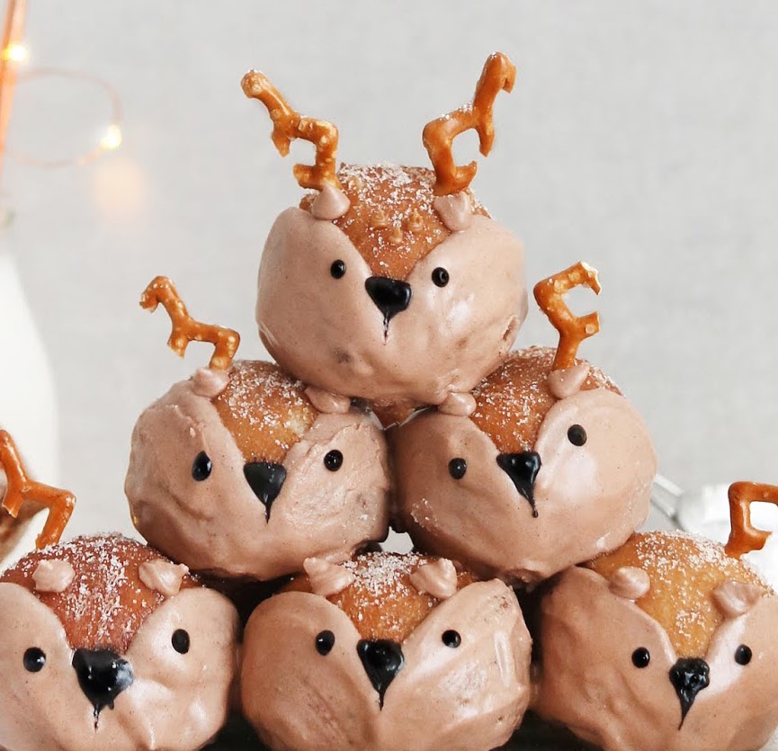
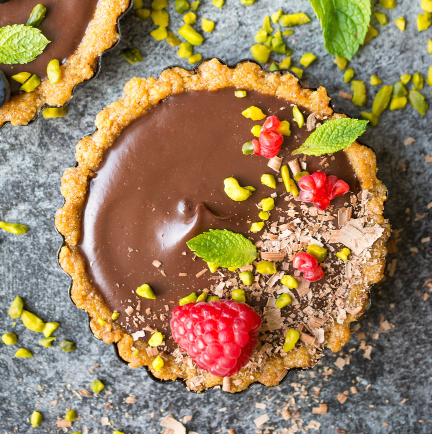

Here are a few of our favourite vegan dessert recipes. If they've piqued your interest, why not search the internet for more inspiration!
|

|
Chocolate Christmas Pudding Protein Balls! Find the full recipe on the Healthy and Pysched website!
- 100g dates
- 50g raisins
- 30g that protein Blissful Brown Rice & Raw Cacao Super Protein
- 50g ground almonds
- 1 tbsp orange juice
- ½ tsp cinnamon
- ¼ tsp all spice
- 30g vegan white chocolate
- 10 pumpkin seeds
- 5 naturally sweetened cranberries
|
|

|
Lemon and Elderflower Cake with Chai Spice Biscuits! Find the full recipe on the Cupful of Kale website!
- 960g self-raising flour
- 3 tsp baking powder
- 540g caster sugar
- 790ml unsweetened almond milk
- Juice of 3 lemons
- Zest of 2 lemons
- 7 tbsp elderflower cordial
- 340 ml rapeseed oil
|
 |
Cinnamon Rolls! Find the full instructions on this Facebook video!
- 2 cups of almond milk
- ½ cup of vegan butter
- ¼ cup of sugar
- 1 packet activated dry yeast
- 5 cups of flour
- 1 tsp salt
- 1 cup brown sugar
- 2 tbsp cinnamon
|
|

|
- 1½ cups flour
- ½ cup cane sugar (additional for topping, optional)
- ½ teaspoon kosher salt
- 2 teaspoons baking powder
- ⅓ cup olive oil, melted
- 1 large banana, mashed
- ½ cup almond milk (room temp)
- 1 teaspoon vanilla extract
- 2 teaspoons lemon juice
- Zest from 1 lemon
- 1½ tbsp rosemary, chopped
|
|  |
- 330ml of warm dairy-free milk
- 2 packs (14g) of dry yeast
- 75g of golden caster sugar
- 640g of self-raising flour
- 1/4 teaspoon of salt
- 100g of melted dairy-free butter
- 2 egg replacers
- Biscoff spread
- Royal icing (dyed black & tan)
- Golden caster sugar
- Pretzels (for the antlers)
- Sunflower oil (for frying)
|
|  |
Vegan Ganache Torte! Find the full recipe on the Lauren Caris Cooks website!
- 150 g Digestive Biscuits
- 85 g Vegan Butter
- 66 g Caster Sugar
- 120 ml Full Fat Coconut Milk from a can
- 150 g Dark Chocolate
- Berries for topping
- Pistachio Nuts for topping
|